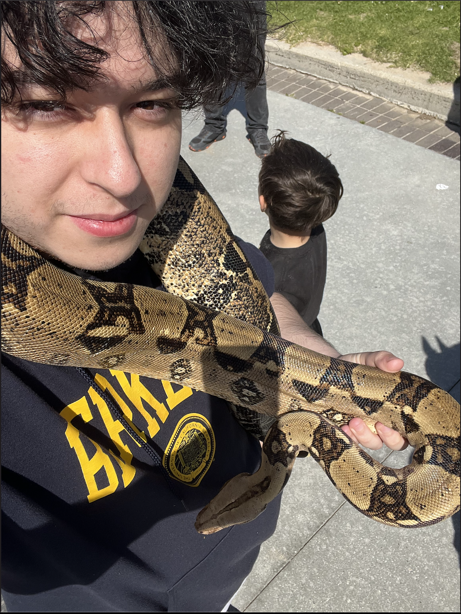

Electrical Engineer & Gamer
Jesus
Peralta-Estrada
"If you're going to try something, do it with all you're heart"

Electrical Engineer & Gamer
"If you're going to try something, do it with all you're heart"

I'm Jesus Peralta, an Electrical Engineering student at the University of Southern California. I grew up with a curiosity for how things work, especially with math and electricity. One thing that has always stuck out to me though is video games. I've always lovd committing to a game for a while and play it all the way through. I specifically love COD and have even played it competitively.
My goal is to ultimately get a Masters in Electrical Engineering though PDP at USC. My favorite part of EE has been learning embedded systems and digital design logic. I love coding at a low-level and seeing it be applied in my very eyes with a circuit I made. I would love to one day have mastered VLSI and work anywhere, so I can get experience.
I get my work ethic from my parents because since I've been a kid, they have alwasy worked and have not skipped a day of work. I am a first-gen and low-income student, so the motivation to make my parents proud is my main fuel. Their sacrfices when they migrated to the United States have lead me to the opportunities I have today. I can do it Mom and Dad. I promise.